Safari
An intimate field record of Africa's wild creatures — every frame scored, sorted, and captioned by machine vision, then bound into a single illustrated journal.
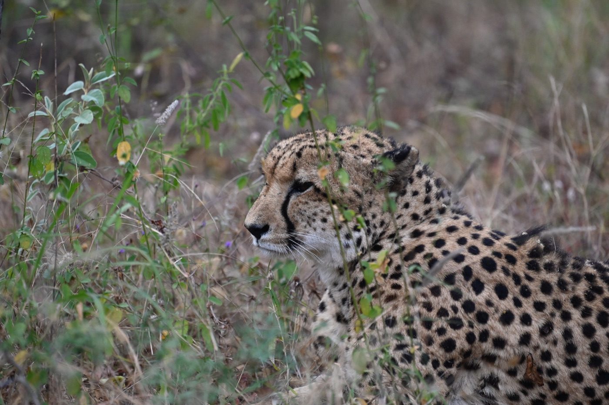
Cheetah
Best shot ★★★★Built for speed, the savanna's golden lightning bolt
A blur of gold erupts from the tall grass — in barely three seconds, the cheetah rockets from a standstill to over 100 km/h, its spine coiling and uncoiling like a spring forged by sixty million years of evolution. No land animal on Earth can match this breathtaking acceleration, a feat so demanding that each hunt is a razor-thin gamble between a meal and total exhaustion. To witness a cheetah in full flight across the African plains is to see nature at its most exquisitely engineered and heartbreakingly vulnerable.
- Adults weigh 34–64 kg (75–140 lbs) and stand about 70–90 cm at the shoulder, with a slender, aerodynamic build unlike any other big cat.
- The fastest land animal on Earth, capable of reaching 112 km/h (70 mph) in short bursts and accelerating from 0 to 100 km/h in roughly 3 seconds.
- Semi-retractable claws act like sprinting spikes, and a long, muscular tail serves as a high-speed rudder — allowing sharp turns at full velocity that would be impossible for any other predator.
- Primarily hunts medium-sized ungulates such as Thomson's gazelles, impala, and springbok, but coalitions of males can take down larger prey including young wildebeest and adult nyala.
- Only an estimated 6,500–7,100 cheetahs remain in the wild, scattered across fragmented populations in 29 African countries and a tiny pocket of Iran.
Habitat & Range
Cheetahs once ranged across the vast sweep of Africa and into the Middle East and Central Asia, but today their kingdom has contracted dramatically. They favor open grasslands, savannas, arid scrublands, and light woodlands where their extraordinary speed can be unleashed without obstruction. Key strongholds remain in East Africa — notably the Serengeti-Mara ecosystem of Tanzania and Kenya — as well as in southern African nations like Namibia and Botswana, which together harbor the largest remaining populations. A critically endangered Asiatic subspecies (A. j. venaticus) clings to survival in the arid plateaus of Iran, numbering fewer than fifty individuals. Across this fragmented range, cheetahs require enormous territories with sufficient prey density and minimal competition from larger predators such as lions and spotted hyenas, making them exquisitely sensitive to habitat loss and ecosystem degradation.
Behaviour
Cheetahs are the consummate pursuit predators of the African plains, relying on explosive speed rather than stealth or brute force. A hunt typically begins with a patient, low-bodied stalk through the grass before detonating into a sprint that can reach 112 km/h, with the chase rarely lasting more than 30 seconds — their lean, overheated bodies simply cannot sustain the effort. Upon catching prey, usually medium-sized antelope like Thomson's gazelles, springbok, or impala, the cheetah trips its quarry with a dew-claw swipe and delivers a suffocating throat bite. Yet success is fragile: up to half of all kills are stolen by lions, leopards, or hyena clans, and a cheetah must rest for up to 30 minutes before it can even begin to eat, panting violently to cool its surging body temperature. Socially, cheetahs defy typical big cat solitude — males often form lifelong coalitions of two or three brothers that hunt cooperatively and defend territories together, while females are solitary wanderers raising cubs across vast home ranges. Mothers invest extraordinary effort in their young, moving them every few days to avoid detection, yet cub mortality can exceed 90% in areas dense with competing predators.
Conservation
Listed as Vulnerable by the IUCN — with the Asiatic subspecies classified as Critically Endangered — cheetahs face a gauntlet of threats including habitat fragmentation, human-wildlife conflict with livestock farmers, illegal wildlife trade in cubs destined for the exotic pet market, and a perilously low genetic diversity that leaves the entire species susceptible to disease and environmental change.
Field Encounter
Gallery
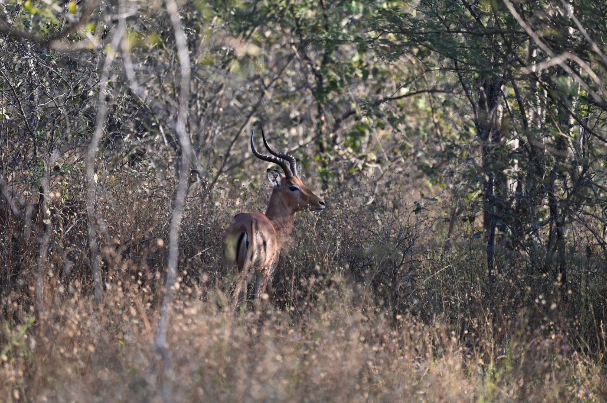
Impala
Best shot ★★★Bronze Acrobats Dancing on the Edge of Survival
In the golden light of an African dawn, a herd of impala erupts into the air — a cascade of chestnut bodies soaring three meters high, twisting mid-flight as if gravity were merely a suggestion. They are the heartbeat of the savanna, the most abundant and arguably the most elegant antelope on the continent, yet their beauty belies a life lived in the perpetual crosshairs of every major predator in Africa. To watch an impala is to witness evolution's masterwork of vigilance, grace, and explosive speed.
- Adults stand 75–95 cm at the shoulder and weigh 40–76 kg, with males significantly larger and heavier than females.
- Capable of reaching speeds up to 80 km/h and leaping 3 meters high and 10 meters in length in a single bound.
- Only males carry the elegant, S-shaped lyre horns, which can grow up to 90 cm long and are used in dramatic territorial combat.
- Mixed feeders that shift between grazing on grasses and browsing on leaves, fruits, and seed pods depending on seasonal availability.
- Females in a herd can synchronize births to within a few weeks, producing a 'predator swamping' wave of up to 80% of calves born in a single narrow window.
Habitat & Range
The impala ranges across the woodlands, savannas, and bushveld of eastern and southern Africa, from Kenya and Uganda south through Tanzania, Zambia, Mozambique, Zimbabwe, Botswana, and into the thorn-scrub lowveld of South Africa. They favor the ecotone — that critical edge where open grassland meets light woodland — a landscape that offers both grazing pastures and leafy browse, as well as the scattered cover needed to break a predator's line of pursuit. Never straying far from permanent water sources, impala are landscape indicators: where you find them in abundance, you have found a balanced, functioning ecosystem. An isolated subspecies, the black-faced impala (A. m. petersi), clings to the arid thornveld of northwestern Namibia and southwestern Angola, a testament to the species' remarkable adaptability.
Behaviour
Impala society is structured around a fluid hierarchy of bachelor herds, nursery groups, and territorial males whose dominance is won through fierce, horn-clashing duels during the annual rut, known as the 'roaring season.' Territorial rams patrol their domains with a guttural, roaring bellow, chasing rivals in explosive sprints, their lyre-shaped horns locking in contests that can leave combatants bloodied and exhausted. As mixed feeders — both grazers and browsers — impala shift their diet seasonally, cropping fresh green grass during the rains and switching to acacia leaves, seed pods, and forbs in the dry months, a dietary flexibility that underpins their extraordinary abundance. Their famous pronking leaps, in which individuals bound unpredictably in multiple directions, are thought to confuse pursuing predators such as leopards, cheetahs, wild dogs, and lions, turning each chase into a bewildering lottery. Remarkably, females can delay giving birth by as much as a month to synchronize parturition with favorable conditions — a strategy that floods the savanna with calves simultaneously, overwhelming predators through sheer numbers.
Conservation
Listed as Least Concern by the IUCN with an estimated population exceeding two million, the impala remains one of Africa's conservation success stories, though the rare black-faced subspecies is classified as Vulnerable due to habitat loss, poaching, and hybridization with the more common subspecies.
Field Encounter
Gallery
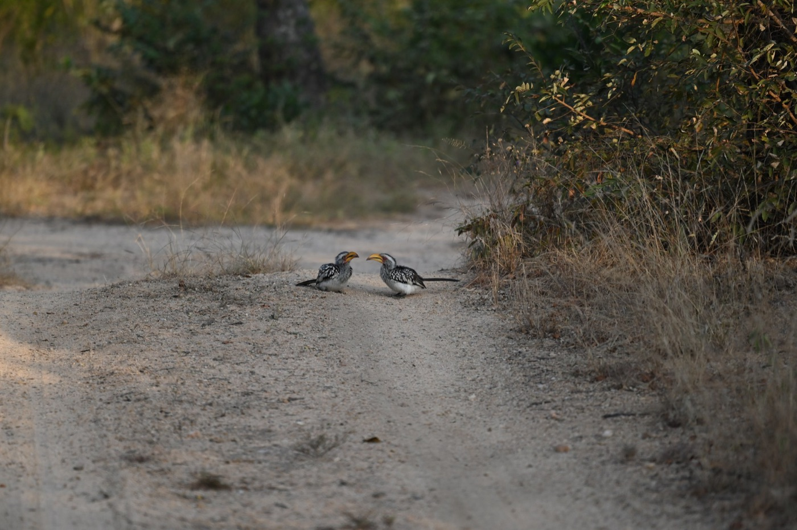
Southern Yellow-billed Hornbill
Best shot ★★★The Savanna's Banana-Beaked Jester Commands the Thornveld Stage
With a sweeping curve of blazing yellow casque catching the African sun, the Southern Yellow-billed Hornbill hops across the cracked earth like a creature plucked from a fever dream. It tilts its oversized bill skyward, tosses a scorpion into the air, and swallows it whole — a daily performance played out beneath the canopy of camel thorn and mopane. Beloved as the real-life inspiration behind a famous animated lion's sidekick, this bird is far more cunning, resilient, and wild than fiction could ever capture.
- Adults measure 48–60 cm in length and weigh between 132–242 grams, with males averaging larger than females.
- Lifespan in the wild is estimated at up to 20 years, though most individuals likely survive 10–15 years.
- Their casqued bill, though large, is remarkably lightweight — constructed of thin bone reinforced with a spongy keratin interior, allowing precise prey handling without neck strain.
- Diet is highly varied: insects, scorpions, spiders, small lizards, seeds, and fruit — they have even been observed raiding weaver bird nests for eggs and chicks.
- Their cooperative sentinel relationship with dwarf mongooses is one of the best-documented interspecies mutualistic partnerships among vertebrates in Africa.
Habitat & Range
The Southern Yellow-billed Hornbill is a signature resident of the dry, sun-scorched woodlands and thornveld savannas of southern Africa, ranging from Angola and Zambia southward through Namibia, Botswana, Zimbabwe, Mozambique, and into South Africa's Kruger lowveld. It thrives in open, semi-arid landscapes dominated by Acacia, mopane, and miombo woodland, where sparse canopy allows sunlight to flood the ground — its primary foraging arena. Often encountered along dusty game-drive roads and at camp picnic sites, it is equally at home in Kalahari sandveld as it is in the mixed bushveld of Limpopo, rarely venturing into dense forest or high-altitude grasslands.
Behaviour
A ground-foraging opportunist, the Southern Yellow-billed Hornbill spends much of its day strutting methodically across open soil, probing leaf litter and flipping debris with its enormous decurved bill to expose beetles, termites, scorpions, and small reptiles. It supplements its protein-rich diet with seeds and fallen fruit, and has been documented in a remarkable mutualistic partnership with dwarf mongooses — standing sentinel for the foraging mammal pack and receiving flushed insects as payment. Breeding behaviour is nothing short of extraordinary: the female seals herself inside a tree cavity using mud and droppings, leaving only a narrow slit through which the male delivers food for weeks on end while she incubates and molts in near-total darkness. This self-imprisonment protects eggs and chicks from snakes and predators until the nestlings are large enough to help the mother break free. Pairs are typically monogamous and vocal, their clucking, tok-tok-tok calls echoing across the bushveld at dawn like a metronome counting down the African morning.
Conservation
The Southern Yellow-billed Hornbill is currently listed as Least Concern by the IUCN, though localized threats including habitat degradation from overgrazing, loss of large nesting trees to logging and elephants, and rising temperatures in the Kalahari — which have been shown to reduce breeding success — suggest that climate change may pose a growing challenge to the species' long-term resilience.
Field Encounter
Gallery
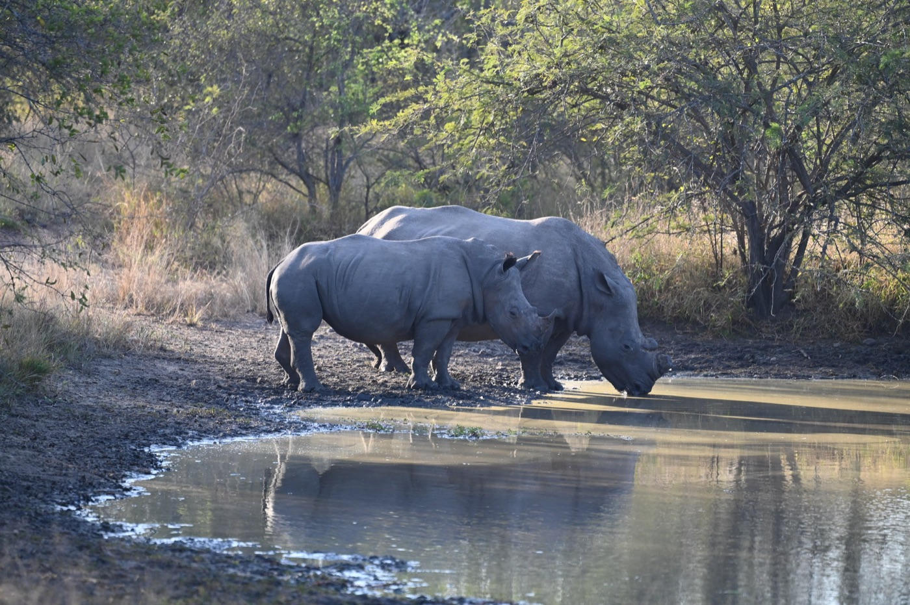
White Rhino
Best shot ★★★★An ancient colossus grazing on the edge of extinction
A dust cloud rises from the golden savanna as two tons of living prehistory lower a squared lip to the earth, methodically mowing grass with the efficiency of a machine that evolution perfected over fifty million years. The white rhino — neither white nor docile when provoked — is the largest pure grazer on the planet, a gentle titan whose very survival has become one of conservation's most urgent and heartbreaking battles. To stand in its presence is to feel the weight of deep time, and to confront the terrifying fragility of the wild.
- Adults weigh between 1,700 and 2,300 kg, making the white rhino the second-largest land mammal after the elephant
- Despite their bulk, white rhinos can reach speeds of up to 50 km/h (31 mph) in short, explosive charges
- Their name derives not from color but from the Afrikaans word 'wyd' (wide), describing their broad, square-shaped mouth
- Strict grazers, they consume over 50 kg of short grass daily, shaping entire savanna ecosystems through their feeding
- Calves stay with their mothers for two to three years, always walking in front — unlike black rhino calves, which follow behind
Habitat & Range
White rhinos inhabit the grasslands, savannas, and open woodlands of sub-Saharan Africa, favoring flat terrain with dense stands of short grass and ready access to water for daily drinking and mud-wallowing. The southern subspecies (C. s. simum) has its stronghold in South Africa — particularly in Kruger National Park and the KwaZulu-Natal reserves — with reintroduced populations scattered across Namibia, Botswana, Zimbabwe, Kenya, and Uganda. The northern subspecies (C. s. cottoni), once roaming the grasslands of Uganda, South Sudan, the Democratic Republic of the Congo, and Chad, is now functionally extinct in the wild, with only two females surviving under armed guard at Kenya's Ol Pejeta Conservancy. This dramatic geographic contraction tells a story of relentless human pressure on one of Africa's most iconic landscapes.
Behaviour
Despite their fearsome appearance, white rhinos are remarkably sociable by rhinoceros standards, forming loose groups called "crashes" of up to fourteen individuals — typically females and their calves, sometimes joined by sub-adults. Bulls are more solitary and fiercely territorial, marking their domains with elaborately scattered dung middens and ritualized spray-urination along well-worn patrol paths. Their wide, flat lips are exquisitely adapted for bulk grazing, sweeping across short grasses like a living lawnmower, and they may consume over 50 kilograms of vegetation daily. Largely crepuscular, they feed during the cooler hours of dawn and dusk, retreating to mud wallows during the heat of midday — a behavior that serves as both thermoregulation and parasite control. Despite poor eyesight, their hearing and sense of smell are extraordinary; a white rhino can detect a human scent from over 700 meters downwind. When threatened, this seemingly placid herbivore can pivot with shocking agility and charge at speeds that would humble most predators.
Conservation
The southern white rhino is classified as Near Threatened by the IUCN — a remarkable recovery from fewer than 50 individuals in the early 1900s to roughly 16,000 today — yet it remains under relentless siege from poaching driven by the illegal demand for rhino horn in Asian markets, where keratin is falsely valued as medicine and status symbol.
Field Encounter
Gallery
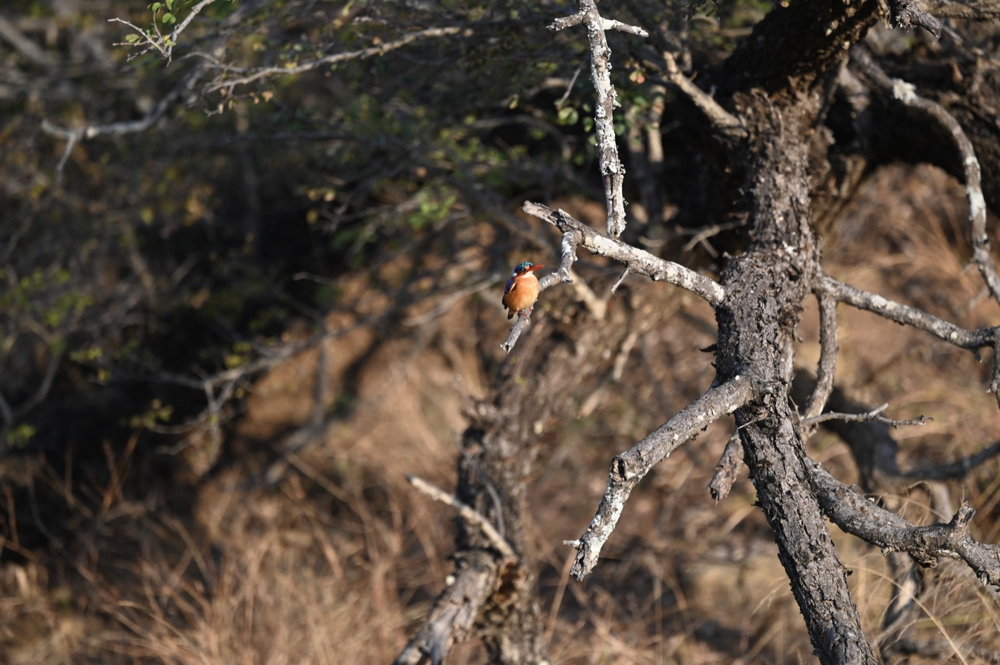
Malachite Kingfisher
Best shot ★★★★★A jeweled bolt of blue fire over still waters
Like a shard of liquid turquoise flung across a papyrus-lined lagoon, the Malachite Kingfisher strikes the water with surgical precision — and vanishes before the ripples even reach the reeds. Barely larger than a human thumb, this iridescent gem of sub-Saharan waterways is proof that nature reserves some of its most electrifying beauty for the smallest of canvases. To glimpse one perched motionless on a swaying reed, crest blazing in the equatorial sun, is to witness wildness distilled to its most exquisite form.
- Weighs just 12–19 grams and measures only 13 cm from bill tip to tail — one of Africa's smallest kingfishers
- Can live up to 6 years in the wild, though most individuals survive only 2–3 years due to predation and environmental pressures
- Its ultramarine and malachite-green plumage is not pigmented — the dazzling colour is produced entirely by structural light refraction in the feather barbs
- Diet consists primarily of small fish under 5 cm, supplemented by dragonfly larvae, water beetles, tadpoles, and tiny freshwater crabs
- Breeding pairs excavate nest tunnels by flying bill-first into soft earth repeatedly, a process that can take over a week to complete
Habitat & Range
The Malachite Kingfisher inhabits a sweeping range across sub-Saharan Africa, from the Senegalese wetlands of the west to the coastal mangroves of KwaZulu-Natal in the south, and from the papyrus-choked margins of Lake Victoria to the slow-moving tributaries of the Okavango Delta. It favors densely vegetated freshwater habitats — marshes, streams, flood plains, and the reedy fringes of lakes and dams — where overhanging perches provide a vantage point above shallow, clear water. Occasionally it ventures into tidal estuaries and mangrove creeks, but it is always bound to water, seldom straying far from the soft banks it needs for nesting burrows. Its range extends from sea level to altitudes above 2,500 meters in the East African highlands, making it one of the continent's most widespread yet perpetually enchanting waterside residents.
Behaviour
A solitary and fiercely territorial hunter, the Malachite Kingfisher employs a classic sit-and-wait strategy, perching low over the water on a reed stem, half-submerged branch, or floating vegetation — head cocked, obsidian eyes locked on the surface below. When prey is detected, it plunges headfirst in a blur of cobalt and rufous, seizing small fish, aquatic insects, tadpoles, or freshwater crabs in its coral-red bill before returning to its perch to beat the catch senseless and swallow it whole. Pairs are monogamous during the breeding season, excavating tunnel nests up to 40 centimeters deep into sandy riverbanks, where both parents incubate a clutch of three to six translucent white eggs. Outside of breeding, individuals are largely solitary, defending a linear stretch of waterway with sharp, high-pitched calls that pierce the stillness of dawn and dusk — a fierce declaration of ownership from a bird that weighs less than a handful of coins.
Conservation
The Malachite Kingfisher is classified as Least Concern by the IUCN, with a stable and widespread population, though localized declines are driven by wetland degradation, pesticide contamination of waterways, and the draining of marshlands for agriculture.
Field Encounter
Gallery
Vervet Monkey
Best shot ★★★Blue-faced tricksters ruling Africa's sun-drenched savannas with cunning
A sharp alarm call slices through the acacia canopy, and in an instant, an entire troop of vervet monkeys erupts into coordinated evasion — some scrambling skyward, others diving for cover. These small, silver-furred primates possess one of the most sophisticated communication systems in the animal kingdom, wielding distinct vocal warnings for eagles, leopards, and snakes. With piercing dark eyes set in striking blue-black faces, vervets are among Africa's most intelligent and adaptable survivors.
- Adults weigh 3.5–8 kg (7.7–17.6 lbs), with males significantly larger than females, and measure 40–60 cm in body length plus a tail of similar length.
- Vervets can live up to 12 years in the wild and over 24 years in captivity.
- They are one of very few non-human species proven to use referential signaling — alarm calls that function almost like words, each denoting a specific predator type.
- Their diet is broadly omnivorous, encompassing over 100 plant species along with insects, small vertebrates, bird eggs, and even gum exuded from acacia bark.
- Infant vervets are born with black natal coats and pink faces, a coloration that triggers intense caregiving interest from nearly every female in the troop — a behaviour known as allomothering.
Habitat & Range
Vervet monkeys are found across a vast swath of sub-Saharan Africa, from Senegal and Ethiopia in the north to South Africa's Eastern Cape in the south. They thrive in savanna woodlands, riverine forests, and the mosaic edges where grassland meets dense bush, relying heavily on the presence of tall trees for sleeping and nearby water sources for drinking. Remarkably adaptable, they have also colonized urban fringes, raiding crops and rummaging through refuse in towns and villages from KwaZulu-Natal to the shores of Lake Victoria. Their range extends from sea level to altitudes of over 4,000 meters on the slopes of East Africa's great mountains, making them one of the most widespread primates on the continent.
Behaviour
Vervet monkeys live in highly structured matrilineal troops of 10 to 70 individuals, where females remain in their natal group for life and rank is inherited from mother to daughter. Their social world is a theatre of alliance, betrayal, and reconciliation — grooming sessions serve as political currency, cementing bonds and defusing tension after conflicts. Most famously, vervets deploy semantically distinct alarm calls: a short, tonal bark for leopards sends the troop scrambling into trees, a staccato cough for eagles drives them into dense undergrowth, and a high-pitched chatter for snakes causes them to stand upright and scan the grass. They are opportunistic omnivores, feeding on fruits, flowers, leaves, seeds, insects, and the occasional bird egg or nestling. Males, who migrate between troops upon reaching sexual maturity, must navigate a complex hierarchy of dominance displays, appeasement gestures, and coalitionary politics to earn mating access.
Conservation
Listed as Least Concern by the IUCN due to their wide range and adaptability, vervet monkeys nonetheless face mounting pressures from habitat fragmentation, persecution as agricultural pests, the illegal pet trade, and road mortality in increasingly urbanized landscapes.
Field Encounter
Gallery
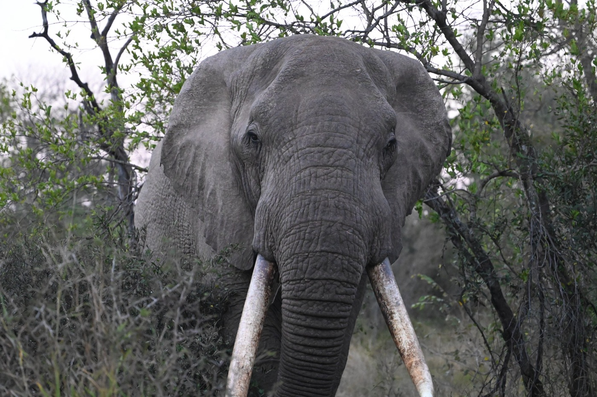
African Elephant
Best shot ★★★★Ancient giants whose footsteps still shake the earth
A dust cloud rises on the savanna horizon, and then they appear — a matriarch leading her family in a slow, deliberate procession across the amber plains, each footfall a seismic whisper felt by herds miles away. The African elephant is the largest land animal on Earth, a keystone titan whose very existence shapes forests, carves waterholes, and writes the script of the wilderness. To stand in their presence is to feel the raw, trembling pulse of a continent.
- Bulls can weigh up to 6,350 kg (14,000 lbs) and stand nearly 4 metres at the shoulder — the largest living terrestrial animal
- Despite their size, they can charge at speeds up to 40 km/h (25 mph) and are surprisingly agile swimmers
- They live 60–70 years in the wild, with matriarchs carrying decades of ecological knowledge passed down through generations
- Elephants are mega-herbivores that consume up to 150 kg of vegetation and drink up to 200 litres of water per day
- They possess the largest brain of any land animal — about 5 kg — and demonstrate self-awareness, empathy, cooperative problem-solving, and long-term memory
Habitat & Range
African elephants roam an extraordinary range of habitats across sub-Saharan Africa, from the golden acacia savannas of the Serengeti and the arid scrublands of Namibia's Etosha Pan to the dense tropical rainforests of the Congo Basin and the marshy floodplains of Botswana's Okavango Delta. Historically, they wandered across nearly the entire continent, but today their range is fragmented into increasingly isolated pockets — national parks, wildlife reserves, and shrinking corridors of wilderness that connect them. They are creatures of water and memory, following ancient migratory routes etched into generational knowledge to reach seasonal rivers, mineral-rich salt licks, and fertile feeding grounds that their great-grandmothers once knew.
Behaviour
African elephant society is a masterwork of emotional intelligence, built around deep matrilineal bonds that can span sixty years or more. Families are led by the eldest female — the matriarch — whose accumulated wisdom of drought cycles, predator threats, and water sources is literally a matter of life and death for the herd. They communicate through a breathtaking repertoire of over seventy vocalizations, including infrasonic rumbles that travel through the ground at frequencies below human hearing, allowing herds to coordinate across distances of several kilometres. They mourn their dead, gently touching the bones and tusks of fallen relatives with their trunks in what can only be described as ritual grief. Feeding up to eighteen hours a day, a single adult can consume over 150 kilograms of vegetation — grasses, bark, roots, and fruit — acting as nature's greatest landscape architects by toppling trees, dispersing seeds, and creating clearings that invite new growth for countless other species.
Conservation
Listed as Endangered by the IUCN, African elephants face relentless threats from poaching for the illegal ivory trade, accelerating habitat loss driven by agricultural expansion, and escalating human-wildlife conflict as their ancient corridors are carved apart by roads, fences, and settlements.
Field Encounter
Gallery
Crocodile
Best shot ★★★Ancient armored predator ruling Africa's waterways since dinosaurs roamed
Beneath the glassy stillness of an African river, a pair of cold, amber eyes breaks the surface — and time itself seems to collapse. The Nile crocodile is a living fossil, a 200-kilogram ambush predator whose lineage predates humanity by over 80 million years. With explosive speed and a bite force that can crush bone like chalk, it is the undisputed apex predator of every waterway it inhabits.
- Adults typically weigh 225–750 kg and measure 3.5–5 metres, with exceptional males exceeding 6 metres and 1,000 kg
- Can live 70–100 years in the wild, making it one of the longest-lived reptiles on Earth
- Possesses integumentary sense organs across its scales that detect minute pressure changes in water, allowing it to strike in complete darkness
- Diet ranges from fish and birds to full-grown Cape buffalo, and it can survive up to a year without eating after a large meal
- Females lay 25–80 eggs in carefully excavated sand nests and fiercely guard them for the 90-day incubation period, with nest temperature determining the sex of hatchlings
Habitat & Range
The Nile crocodile commands an extraordinary range across sub-Saharan Africa, from the vast floodplains of the Okavango Delta and the hippo-crowded shallows of the Mara River to the brackish estuaries of Madagascar and the great lake systems of East Africa. It thrives in freshwater rivers, lakes, marshlands, and mangrove swamps, though it occasionally ventures into coastal saltwater. Basking on sunlit sandbanks to thermoregulate, it is equally at home in turbid, slow-moving waters where submerged logs and reeds provide perfect concealment. Wherever permanent water exists across the continent — from the Zambezi to the Nile that gave it its name — this formidable reptile has staked its ancient claim.
Behaviour
The Nile crocodile is a patient, calculating hunter that can remain motionless for hours, submerged with only its nostrils and eyes exposed, waiting for prey to venture within striking distance. In a burst that defies its bulk, it lunges with devastating speed, clamping down with a bite force exceeding 22,000 newtons — among the most powerful ever measured in any living animal — then executing its infamous death roll to dismember prey too large to swallow whole. Its diet shifts dramatically with age: hatchlings feed on insects and small fish, while adults take down wildebeest, zebra, and buffalo during the iconic Great Migration river crossings. Surprisingly complex in their social lives, Nile crocodiles establish strict dominance hierarchies, and females are remarkably attentive mothers — gently carrying hatchlings to the water in their fearsome jaws and guarding them for weeks against predators including monitor lizards, eagles, and other crocodiles.
Conservation
Listed as Least Concern by the IUCN due to successful conservation programs and sustainable-use farming, the Nile crocodile nonetheless faces localized threats from habitat loss, pollution, entanglement in fishing nets, and human-wildlife conflict as expanding settlements encroach upon its waterways.
Field Encounter
Gallery
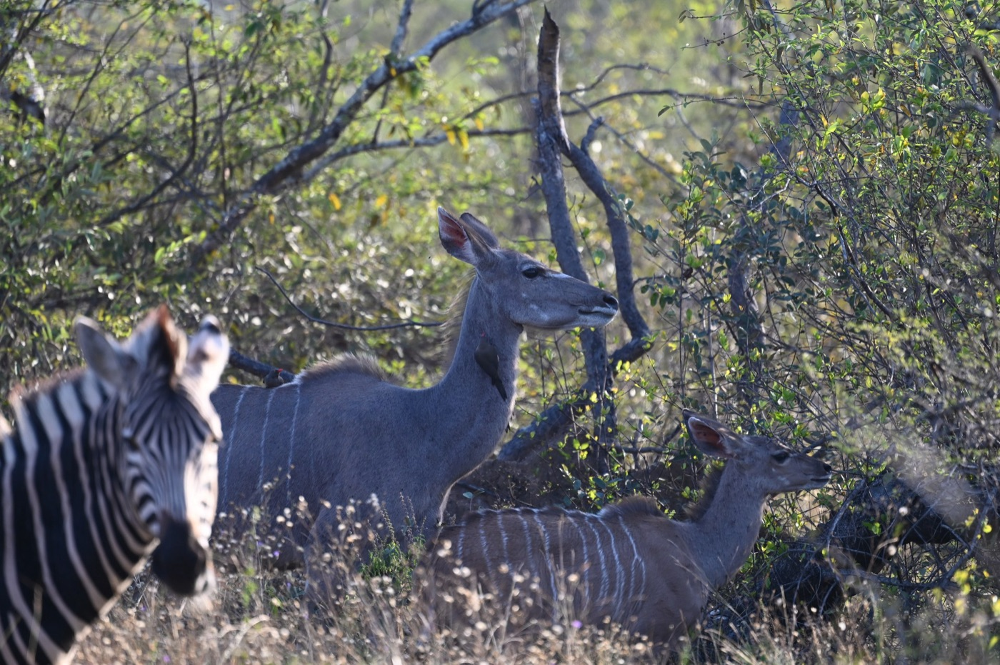
Greater Kudu
Best shot ★★★Spiral-Horned Phantom of Africa's Sunlit Woodland Edges
In the dappled half-light of the African bush, a pair of magnificent spiral horns rises above the thorn scrub like a slow-turning helix of bone and myth. The Greater Kudu — arguably the most elegant of all antelope — moves through the woodland with a ghostly poise that belies its formidable size, its ash-grey flanks streaked with chalk-white stripes that fracture its silhouette into shadow. To witness a bull kudu step from the treeline at dawn, horns thrown back in regal composure, is to understand why the Shona people once declared this animal a creature of kings.
- Bulls stand up to 1.6 m at the shoulder and weigh 190–315 kg; cows are notably smaller at 120–210 kg
- Despite their bulk, kudu can leap over 2 meters high and sprint at speeds up to 100 km/h in short bursts when fleeing predators
- A mature bull's spiraling horns can reach an extraordinary 1.8 meters along the curve — among the longest of any antelope
- Strictly browsers, they feed on leaves, forbs, tubers, succulents, and fallen fruit from over 100 documented plant species
- Females communicate with calves using soft grunts, while bulls produce one of the loudest vocalizations of any antelope — a deep, resonant bark that carries across the woodland at dusk
Habitat & Range
The Greater Kudu ranges across the woodlands, bushveld, and rocky hillsides of eastern and southern Africa, from Ethiopia and Tanzania south through Zambia, Zimbabwe, and Mozambique to the savannas of South Africa and Namibia. It favors mixed deciduous woodland and thicket-lined river margins where acacia, combretum, and mopane trees provide both food and cover. Remarkably adaptable, kudu have also colonized the fringes of semi-arid Karoo scrubland and the rugged kopjes of the Waterberg, thriving wherever dense bush offers refuge from open-country predators. They are seldom found far from cover, relying on broken terrain and tangled vegetation as their first and most effective line of defense.
Behaviour
Greater kudu are browsers of exquisite selectivity, plucking leaves, seedpods, wild fruits, and fresh shoots from over a hundred plant species — and occasionally standing on their hind legs to reach high branches, an almost surreal sight in an animal that can exceed 300 kilograms. Females and calves form small, fluid herds of six to twelve individuals, drifting through overlapping home ranges with a quiet sociability, while mature bulls live in loose bachelor groups or wander alone, rejoining females only during the rut. When rival males do clash, their spectacular corkscrew horns interlock in slow, shoving contests of strength — and tragically, the spirals sometimes lock permanently, condemning both combatants to death. Despite their size, kudu are extraordinary jumpers: a startled individual can clear a two-meter fence from nearly a standing start, bounding away with its bushy tail curled upward in a flash of white warning.
Conservation
The Greater Kudu is classified as Least Concern by the IUCN, with a stable overall population, though localized declines persist due to habitat fragmentation, subsistence hunting, and periodic outbreaks of rabies that can devastate regional herds.
Field Encounter
Gallery
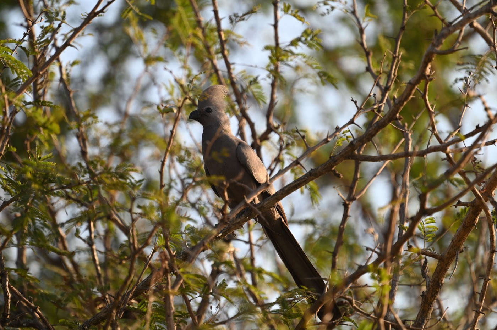
Grey Go-away-bird
Best shot ★★★The ashen sentinel whose cry commands the bushveld
Like a puff of wood smoke given wings, the Grey Go-away-bird perches atop a sun-bleached acacia and unleashes its nasal, drawn-out "g'waaaay" — a cry so unmistakable it has earned the bird its common name and the frustration of hunters across southern Africa. With its towering crest, smoky plumage, and bold demeanor, this lourie is less a skulker of the canopy than a self-appointed alarm system for the entire bushveld. Where it sits, nothing approaches unannounced.
- Length: 47–51 cm (about 19–20 inches), with a weight of approximately 200–300 grams
- Lifespan: up to 20 years in the wild, with some captive individuals exceeding that
- Their plumage contains a unique copper-based pigment called turacoverdin — though in this species, the grey tones result from a related pigment, turacin, being largely absent
- Diet is almost entirely vegetarian: wild fruits, berries, flowers, seed pods, and fresh leaves, with occasional insects taken opportunistically
- Their persistent alarm calls have made them the bane of hunters across Africa, effectively warning every animal within earshot of approaching danger
Habitat & Range
The Grey Go-away-bird ranges across the savannas, open woodlands, and thornveld of southern and east-central Africa, from the dry Kalahari scrublands of Botswana and Namibia through Zimbabwe, Zambia, and Mozambique, and into the bushveld lowlands of South Africa. It favours acacia-dominated landscapes, riverine woodlands, and even suburban gardens where fruiting trees offer reliable sustenance. Unlike its more forest-dependent turaco relatives, this species thrives in semi-arid environments, rarely straying far from scattered trees that provide both food and elevated lookout perches from which to survey the landscape.
Behaviour
Gregarious and conspicuously vocal, Grey Go-away-birds live in loose flocks of up to twenty individuals, bounding clumsily from branch to branch with a distinctive loping gait that belies their surprising agility in flight. Their alarm call — a loud, bleating "kwêh" repeated insistently — alerts not only conspecifics but also antelope, warthogs, and other prey species to approaching predators, much to the chagrin of stalking leopards and human hunters alike. They feed almost exclusively on fruits, flowers, buds, and young leaves, with a particular fondness for wild figs and acacia pods, acting as important seed dispersers throughout their range. Pairs are monogamous and cooperative breeders; older offspring from previous seasons often remain to help incubate eggs and feed nestlings in flimsy stick-platform nests, reinforcing the tight social bonds that define their communal existence.
Conservation
The Grey Go-away-bird is classified as Least Concern by the IUCN, with a stable and widespread population, though localized habitat loss from agricultural expansion and deforestation remains a long-term concern in parts of its range.
Field Encounter
Gallery
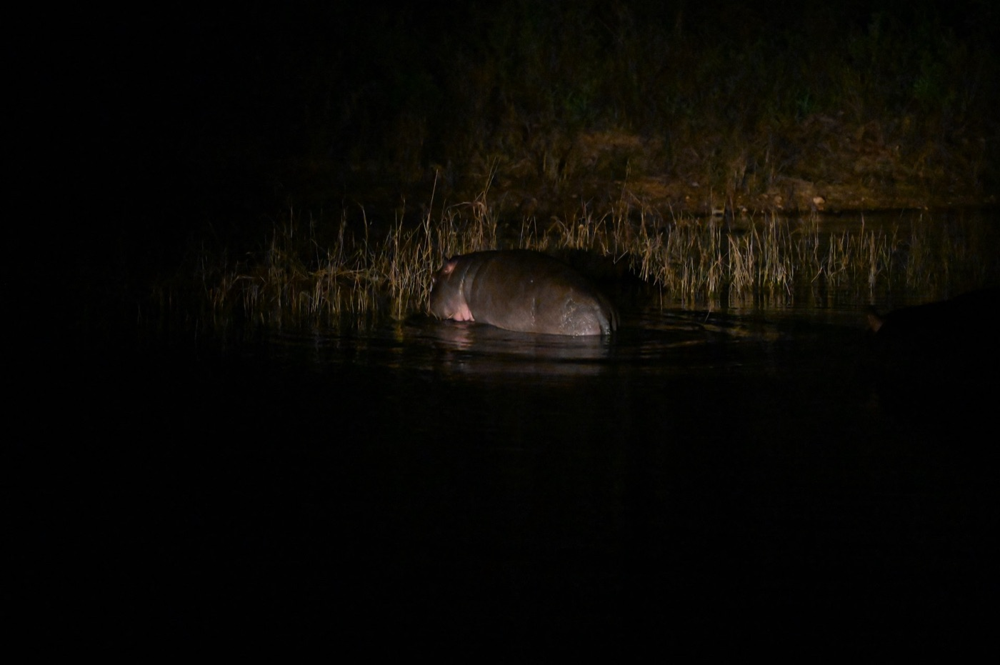
Hippo
Best shot ★★★★★Africa's River Titan: Jaws That Command the Current
As dusk settles over an African floodplain, the still water erupts — a massive, glistening head rises like a boulder given life, its cavernous jaws splitting open in a display that can make even a bull crocodile retreat. The hippopotamus, deceptively docile in appearance, is one of the continent's most formidable and unpredictable creatures. Weighing as much as a mid-sized SUV and armed with tusk-like canines that can snap a wooden canoe in half, this semi-aquatic giant commands every waterway it inhabits with unquestioned authority.
- Adult males can weigh between 1,500 and 1,800 kg (3,300–4,000 lbs), with exceptional bulls exceeding 2,000 kg — making them the third-largest living land mammal.
- Despite their bulk, hippos can reach burst speeds of up to 30 km/h (19 mph) on land, easily outrunning most humans over short distances.
- Their skin secretes a unique reddish, oily substance nicknamed 'blood sweat' that acts as a natural sunscreen and antimicrobial agent — a biochemical marvel found nowhere else in the animal kingdom.
- Hippos are almost exclusively herbivorous, grazing on short grasses at night; their simple stomach and specialized gut fermentation allow them to extract maximum energy from relatively modest quantities of forage compared to their enormous size.
- A dominant bull's territory may span a 250-metre stretch of river, which he advertises by explosively scattering dung with a propeller-like tail motion — a behaviour called 'dung showering' — to broadcast his presence and status to rivals and females alike.
Habitat & Range
Hippos are found across sub-Saharan Africa wherever deep, slow-moving rivers, lakes, and swamps provide the permanent water sources they require to keep their sensitive, nearly hairless skin cool and hydrated under the equatorial sun. Historically ranging across the entire continent and even into the Nile Delta, their distribution has contracted significantly, with stronghold populations now concentrated in East and Southern Africa — particularly in Tanzania's Serengeti, Zambia's Luangwa Valley, and the vast Okavango Delta of Botswana. They favour stretches of water adjacent to flat grasslands, as they must emerge each night to graze on terrestrial pastures, following well-worn hippo trails that have carved themselves into riverbanks over generations.
Behaviour
Hippos are gregarious by day, congregating in pods of 10 to 30 individuals — sometimes more — in a tightly packed social hierarchy ruled by a dominant bull who defends his stretch of river with explosive, jaw-clashing duels that can inflict fatal wounds. Despite their rotund, lumbering appearance, they are remarkably agile in water, galloping along riverbeds rather than truly swimming, and can hold their breath for up to five minutes. As obligate nocturnal grazers, they leave the water at nightfall to consume roughly 35 kilograms of short grass in a single feeding session, travelling up to 10 kilometres along established pathways. Their dung, scattered by vigorous tail-flicking, plays a critical ecological role, fertilizing aquatic ecosystems with nutrients that sustain entire food webs of fish and invertebrates. Females are fiercely protective mothers, and few predators — lion, crocodile, or human — dare challenge an alert hippo cow guarding her calf.
Conservation
Listed as Vulnerable by the IUCN, hippopotamus populations face mounting pressure from habitat loss driven by agricultural expansion, prolonged drought intensified by climate change, unregulated hunting for meat and ivory-like canine teeth, and escalating human-wildlife conflict along Africa's increasingly crowded waterways.
Field Encounter
Gallery
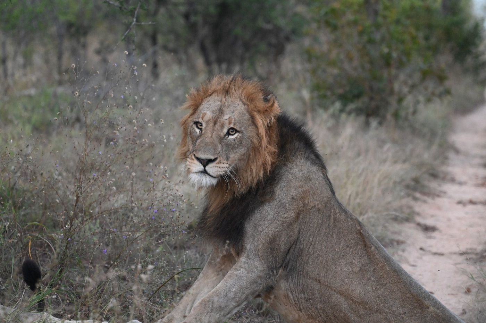
Lion
Best shot ★★★★The Undisputed Sovereign of Africa's Sun-Scorched Savannas
As the amber light of dusk spills across the Serengeti, a deep, guttural roar tears through the stillness — a sound that carries eight kilometers and stops every living creature in its tracks. The lion, Africa's most formidable apex predator, commands the plains not merely through brute strength but through an intricate web of alliance, ambush, and ancestral dominance that has evolved over hundreds of thousands of years. To witness a pride on the move is to glimpse the raw, unedited machinery of the wild — power distilled into tawny muscle and unblinking golden eyes.
- Adult males weigh 150–250 kg (330–550 lbs) and measure up to 3 meters (10 ft) from nose to tail tip, making them Africa's largest carnivore
- Lions can reach sprint speeds of 80 km/h (50 mph) in short bursts but rely on stealth and teamwork rather than sustained chases
- A lion's roar is the loudest of any big cat, reaching 114 decibels — audible from 8 km (5 miles) away across the open savanna
- Prides primarily hunt large ungulates including wildebeest, zebra, and Cape buffalo, with adult lions consuming up to 40 kg (88 lbs) of meat in a single feeding
- Male coalitions patrol territories spanning 20–400 square kilometers, marking boundaries with urine and roaring choruses that serve as acoustic fences against rivals
Habitat & Range
Lions once roamed across Africa, southern Europe, and into Asia as far east as India, but today their kingdom has contracted dramatically. They inhabit the grasslands, open woodlands, and semi-arid scrublands of sub-Saharan Africa, with stronghold populations anchored in the great ecosystems of the Serengeti-Mara, the Okavango Delta, Kruger National Park, and the Luangwa Valley. A critically endangered remnant population of Asiatic lions — numbering roughly 700 individuals — clings to survival in India's Gir Forest, a last whisper of the species' former transcontinental reign. Lions are creatures of open landscapes, relying on scattered cover and the vastness of the savanna to execute their cooperative hunts, though they adapt surprisingly well to the fringes of wetlands, dry riverbeds, and even the stark dunes of Namibia's Skeleton Coast.
Behaviour
Lions are the only truly social cats, living in prides that typically consist of two to fifteen related females, their cubs, and a coalition of two to four males who have fought — often brutally — for the right to reign. The females are the pride's engine: they hunt cooperatively in coordinated formations, flanking herds of zebra, wildebeest, and buffalo with a tactical precision that borders on military strategy. Males, though often cast as indolent, serve a critical role as defenders of territory and pride, engaging in savage battles with rival coalitions that can leave combatants scarred or dead. Cubs are raised communally, with females nursing each other's young, while males new to a pride may commit infanticide to bring females back into estrus — a ruthless calculus of genetic survival. Their social bonds are reinforced through elaborate greeting rituals involving head-rubbing and low moaning vocalizations, and a pride at rest, draped over one another in the shade of an acacia, presents one of the most intimate portraits of kinship in the animal kingdom.
Conservation
Classified as Vulnerable by the IUCN, with the West African subpopulation listed as Critically Endangered, lions face escalating threats from habitat loss and fragmentation, human-wildlife conflict with pastoralist communities, prey base depletion through bushmeat poaching, and the insidious trade in lion bones fueling demand in traditional medicine markets — their numbers having plummeted from an estimated 200,000 a century ago to fewer than 25,000 wild individuals today.
Field Encounter
Gallery
Vulture
Best shot ★★★★★Dark sentinel of death, recycling life from the fallen
Against a bleached sky, a black silhouette descends on broad, fingered wings — the Black Vulture, nature's most unflinching undertaker. With a wrinkled, featherless head forged for plunging into carrion and eyes that miss nothing from soaring heights, Coragyps atratus embodies the raw, unapologetic machinery of ecological renewal. Where death visits, this vulture follows — not as an omen, but as a vital custodian of the living world.
- Weight ranges from 1.6 to 3 kg (3.5–6.6 lbs) with a wingspan of up to 1.5 m (5 ft)
- Can live up to 25 years in the wild, with captive individuals exceeding 30 years
- Lacks a syrinx (vocal organ), so it can only produce hisses and grunts — a voice as stark as its lifestyle
- Feeds almost exclusively on carrion but will also take eggs, newborn animals, and overripe fruit when opportunity arises
- Roosts communally in groups of hundreds and uses social information-sharing to locate food — vultures that fail to find food follow successful roostmates the next day
Habitat & Range
Though Coragyps atratus is a species of the Americas — ranging from the southeastern United States through Central and South America to central Argentina — it is important to note that safari-goers will not encounter this species on the African continent. Its ecological niche in Africa is filled by Old World vultures such as the Hooded Vulture and White-backed Vulture. In its native range, the Black Vulture thrives across an extraordinary diversity of landscapes: humid tropical lowlands, open grasslands, scrubby woodlands, coastal cliffs, and increasingly the sprawling fringes of human cities, where landfills and slaughterhouses provide a grim but reliable buffet. It is a bird supremely adapted to the margins where wilderness meets civilization.
Behaviour
Black Vultures are intensely social creatures, roosting in enormous communal gatherings that can number in the hundreds, their dark forms draped across dead trees and rooftops like a congress of shadow. Unlike their cousin the Turkey Vulture, they possess a relatively weak sense of smell and rely heavily on their keen eyesight — and on following other scavengers — to locate carcasses. They are aggressive and opportunistic at feeding sites, often bullying the larger Turkey Vulture off a kill through sheer force of numbers. Their social bonds run deep: mated pairs are monogamous and fiercely loyal, sometimes maintaining partnerships for life, and family groups forage and roost together across seasons. In flight, they alternate between stiff-winged soaring and rapid, choppy flaps, riding thermals with an efficiency that belies their somewhat ungainly appearance on the ground.
Conservation
The Black Vulture is currently listed as Least Concern by the IUCN, with a large and stable population, though localized threats include poisoning from lead ammunition and pesticide-laced carcasses, vehicle collisions, and persecution by ranchers who — often wrongly — blame them for livestock predation.
Field Encounter
Gallery
Zebra
Best shot ★★★★Striped Sentinels of the Savanna, Never Truly Tamed
A thundering column of black and white surges across the Serengeti, hooves hammering sun-scorched earth — the Great Migration is underway, and at its chaotic heart march hundreds of thousands of plains zebras. Each animal wears a coat of stripes as unique as a human fingerprint, a living barcode forged by evolution that dazzles predators, deflects biting flies, and binds family groups in a visual language we are only beginning to decode. To witness a zebra herd at full gallop, dust billowing into an amber sky, is to confront one of Africa's most iconic and enduring spectacles.
- Adults stand 1.1–1.5 metres at the shoulder and weigh 350–450 kg, with males slightly larger than females.
- A plains zebra can reach speeds of up to 65 km/h (40 mph) and may sustain a gallop long enough to outpace most predators over distance.
- Each zebra's stripe pattern is completely unique — researchers use photographic identification software to catalogue individuals the way forensic scientists use fingerprints.
- Zebras are non-ruminant hindgut fermenters that spend up to 18 hours a day grazing on coarse grasses, sedges, and occasional bark or leaves, consuming roughly 10–15 kg of forage daily.
- Harems may band together into loose herds of tens of thousands during migration, yet a stallion can recognise every mare in his family by sight, scent, and voice — even amid the chaos of a river crossing.
Habitat & Range
The plains zebra roams the broadest range of any wild equid in Africa, from the sweeping grasslands of East Africa's Serengeti–Mara ecosystem to the miombo woodlands of Zambia, the semi-arid scrublands of southern Angola, and the coastal savannas of Mozambique. They thrive wherever open or lightly wooded terrain provides sufficient grazing and reliable access to water — a resource they seldom stray far from, unlike their more drought-adapted cousin, Grevy's zebra. Populations are densest in Tanzania and Kenya, where vast protected areas sustain migratory super-herds, but fragmented populations persist as far south as South Africa's KwaZulu-Natal and as far north as Ethiopia's Rift Valley, occupying elevations from sea level to alpine grasslands above 4,000 metres on Mount Kenya's flanks.
Behaviour
Plains zebras are intensely social animals organized into remarkably stable family units called harems — typically one stallion, one to six mares, and their offspring — bonds so strong that members will search for a lost companion for days. Mares establish a strict linear hierarchy that determines drinking and grazing order, and mutual grooming sessions, where two zebras stand head-to-tail and nibble each other's necks, serve both to remove parasites and to reinforce social ties. When predators strike — lion, hyena, or wild dog — the stallion drops to the rear of the fleeing group, kicking with devastating force capable of shattering a lion's jaw, while mares shield foals at the centre. As pioneer grazers, zebras perform a critical ecological role: their tough digestive systems process coarse, high-stem grasses that other herbivores cannot, effectively mowing the savanna and exposing the tender new shoots that wildebeest and gazelles depend on, making them architects of the entire grazing succession.
Conservation
The plains zebra is classified as Near Threatened by the IUCN, with populations declining due to habitat loss from agricultural expansion, competition with livestock, illegal bushmeat hunting, and the fragmentation of historic migration corridors across eastern and southern Africa.
Field Encounter
Gallery
Puff Adder
Best shot ★★★★Africa's deadliest ambush predator hides in plain sight
Motionless among the sun-scorched leaf litter, the puff adder waits — a coiled landmine of muscle, venom, and prehistoric patience. Responsible for more snakebite fatalities across Africa than any other species, Bitis arietans is not the continent's longest or most venomous serpent, but it is arguably its most dangerous. When the strike comes, it is a blur of fangs and cytotoxic fury, launched and retracted in less than a quarter of a second.
- Adults typically measure 90–110 cm in length and can weigh over 6 kg, making them one of Africa's heaviest vipers
- Despite its sluggish appearance, the puff adder can strike in under 0.25 seconds, among the fastest of any snake
- Lifespan in the wild is estimated at 10–15 years, with captive individuals living beyond 20
- Diet includes rodents, birds, lizards, frogs, and even other snakes — prey is swallowed whole after venom immobilizes it
- Unlike most snakes that flee vibrations, the puff adder relies on stillness and camouflage, choosing to remain motionless even as large animals pass dangerously close
Habitat & Range
The puff adder commands one of the broadest ranges of any African snake, thriving from the rocky fynbos of the Western Cape to the savannas of East Africa, the arid scrublands of the Sahel, and even the fringes of the Arabian Peninsula. It is a supreme generalist, equally at home in grasslands, open woodland, and semi-desert — anywhere that offers enough ground cover and a steady supply of rodents. Unlike forest-dwelling species, it favors open or semi-open terrain where its extraordinary camouflage — a cryptic mosaic of chevron-shaped markings in tawny browns, ochres, and charcoal — renders it virtually invisible against bare earth and dry vegetation. This camouflage, combined with its stubborn refusal to flee from approaching footsteps, is precisely what makes human encounters so frequent and so perilous.
Behaviour
The puff adder is the consummate ambush specialist, sometimes lying in a single position for weeks at a time, chemically luring prey by emitting a scent from its tail tip that attracts curious frogs and rodents. When a meal wanders within range, the snake deploys one of the fastest strikes in the reptile world — a forward lunge rather than the lateral sweep of many vipers — driving long, hinged fangs deep into tissue and injecting a potent cytotoxic venom that destroys cells and tissue on contact. It is a solitary and largely nocturnal animal, though it will bask openly during cooler months. Males engage in dramatic ritualized combat during breeding season, rising up and wrestling in sinuous, swaying bouts that can last for hours. Females are among the most prolific of all vipers, giving live birth to broods that can exceed 50 — and occasionally surpass 80 — fully formed, venomous neonates in a single litter.
Conservation
Currently listed as Least Concern by the IUCN due to its vast range and adaptability, the puff adder nonetheless faces mounting pressure from habitat degradation, agricultural expansion, road mortality, and deliberate persecution by humans who fear its lethal reputation.
Field Encounter
Gallery
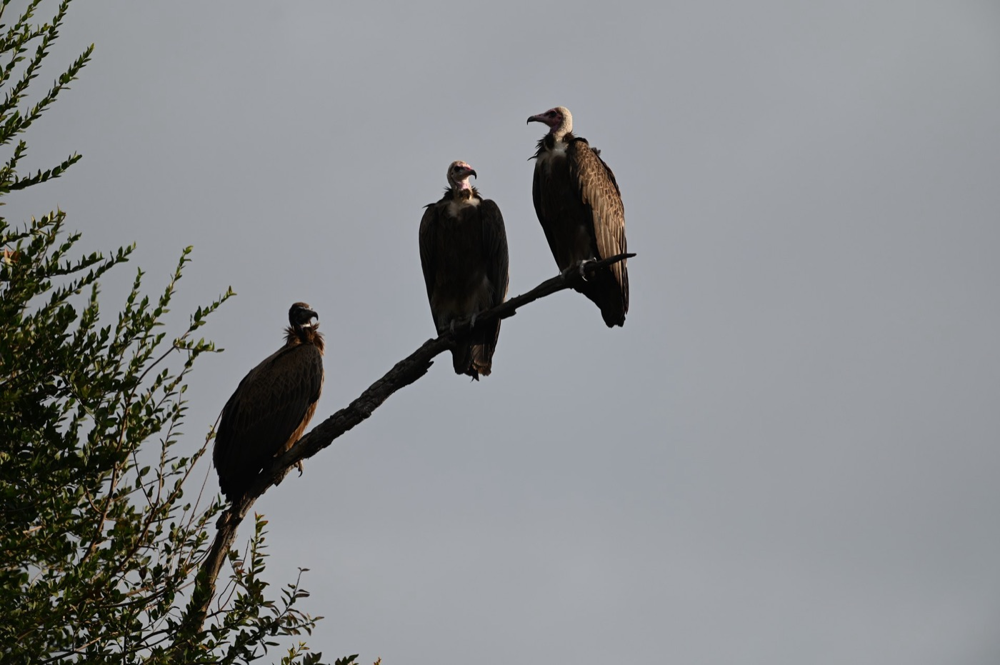
White-backed Vulture
Best shot ★★★★Africa's grim reaper soars on thermals of death
Against the shimmering heat of the African savanna, a dark silhouette wheels in patient, widening circles — the White-backed Vulture has spotted what the living have left behind. Descending in a controlled fury of broad wings and outstretched talons, it arrives at a carcass like a priest at an altar, ready to perform the continent's most vital and misunderstood sacrament. This is nature's great sanitation force: unglamorous, indispensable, and vanishing at a terrifying pace.
- Weighs 4–7 kg with a wingspan of up to 2.3 meters, making it one of Africa's largest vultures
- Can soar at altitudes exceeding 6,000 meters and cover over 200 km daily in search of food
- Lifespan of approximately 18–20 years in the wild, with some captive individuals surpassing 25 years
- Feeds almost exclusively on soft tissue and muscle of large mammal carcasses, consuming up to 1 kg in a single frenzied sitting
- Highly gregarious — roosts communally in groups of over 100 individuals and nests in colonies, relying on collective vigilance to locate food across vast landscapes
Habitat & Range
The White-backed Vulture commands the skies across a vast swathe of sub-Saharan Africa, from the acacia-studded woodlands of Senegal and the Sahel to the bushveld of South Africa and the great savannas of East Africa's Rift Valley. It favors open grasslands, lightly wooded plains, and the fringes of gallery forests — anywhere large herbivores roam and die. Colonies often establish themselves in tall trees near rivers or along escarpments, where thermals rise reliably at dawn, launching dozens of birds skyward in a daily ritual of effortless soaring that can cover more than 200 kilometers in a single day's search for carrion.
Behaviour
White-backed Vultures are the quintessential communal scavengers of the African plains, and their feeding events are spectacles of controlled chaos. A single carcass can draw dozens — sometimes hundreds — of vultures within minutes, each bird having followed the spiraling descent of the first to spot the meal. A strict pecking order governs the frenzy: dominant adults plunge their long, bare necks deep into the body cavity, their specialized tongues and razor-edged bills designed to strip soft tissue from bone with surgical efficiency. Younger birds wait nervously at the periphery, lunging in for scraps between the savage jostling of their elders. Highly social, they nest in loose colonies of up to twenty pairs, often in towering Acacia or Balanites trees, reinforcing bonds through mutual preening and elaborate courtship displays that include synchronized soaring and gentle bill-touching. Their extraordinary eyesight — estimated at six to eight times sharper than a human's — allows them to detect a fallen wildebeest from altitudes exceeding a thousand meters, while a network of airborne vultures acts as a living surveillance grid across the landscape, each bird watching not only the ground but also the flight patterns of its distant neighbors.
Conservation
Classified as Critically Endangered by the IUCN, the White-backed Vulture has suffered a catastrophic population decline of over 90% in parts of its range over three generations, driven primarily by poisoning — both deliberate (by poachers seeking to eliminate vultures that reveal kill sites) and incidental (from veterinary drugs like diclofenac and pesticide-laced carcasses) — as well as habitat loss, electrocution on power lines, and the illegal trade in vulture body parts for traditional medicine.
Field Encounter
Gallery
Dark-capped Bulbul
Best shot ★★★Africa's irrepressible songster heralding every golden dawn and dusk
Before the first sliver of sunlight breaches the bushveld horizon, a liquid, jubilant call shatters the stillness — the Dark-capped Bulbul announcing the birth of a new African day. With its sooty crown, bright yellow vent flashing like a lantern, and an inexhaustible repertoire of cheerful notes, this ubiquitous yet utterly charismatic bird is the soundtrack of the southern savanna. Overlooked by many safari-goers scanning for big cats and elephants, the Dark-capped Bulbul rewards the attentive observer with a masterclass in resilience, adaptability, and avian joie de vivre.
- Weighs 25–50 g with a body length of approximately 18–22 cm
- Typical lifespan in the wild is around 10–12 years
- Its conspicuous bright yellow undertail coverts serve as a flash signal during flight, aiding flock cohesion
- Omnivorous diet includes over 50 species of fruit, plus insects, nectar, and small vertebrates
- Highly social outside breeding season, forming noisy communal roosts of up to 200 individuals at favoured sites
Habitat & Range
The Dark-capped Bulbul ranges across a vast swathe of sub-Saharan Africa, from the acacia thornveld of South Africa's Limpopo Province through the miombo woodlands of Zambia and Tanzania to the lush highlands of Kenya and Ethiopia. It thrives in an astonishing variety of landscapes — riverine thickets, coastal scrub, suburban gardens, farmland edges, and open savanna fringed with fruiting trees. Equally at home in pristine wilderness and bustling human settlements, it exploits edge habitats with particular success, and its ringing call is as likely to echo through a Johannesburg garden as across the floodplains of the Okavango Delta.
Behaviour
Gregarious, bold, and endlessly vocal, the Dark-capped Bulbul forages in loose, animated flocks that ripple through the canopy like a wave of restless energy. Its diet is remarkably catholic — soft fruits, nectar, flower petals, seeds, and a generous helping of insects, spiders, and even small lizards seized with quick, agile strikes. Pairs form strong monogamous bonds and defend breeding territories with fierce duets, their calls interlocking in a synchronized performance that strengthens the pair's commitment. At communal roosts, dozens may gather at dusk, chattering incessantly before falling silent in unison — an abrupt, almost eerie hush that signals the African night has won.
Conservation
Listed as Least Concern by the IUCN, the Dark-capped Bulbul faces no immediate existential threats, though localized habitat degradation, pesticide use, and nest predation by invasive species can impact peripheral populations.
Field Encounter
Gallery
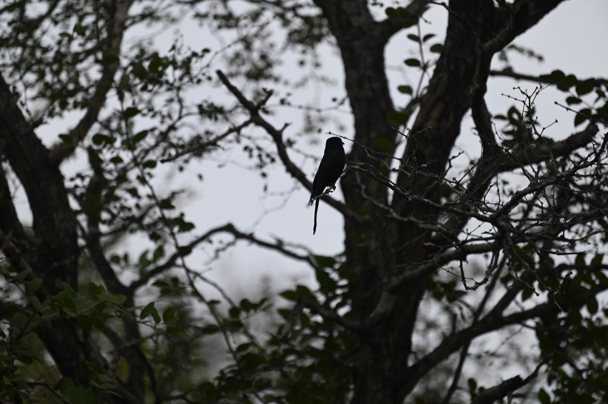
Fork-tailed Drongo
Best shot ★★★Africa's master deceiver rules the savanna with stolen calls
Jet-black and gleaming like a shard of polished obsidian, the Fork-tailed Drongo perches on an exposed branch, surveying the bushveld with fierce, ruby-red eyes. It is small — barely the weight of a handful of coins — yet it commands the respect of raptors, the obedience of meerkats, and the fear of insects across an entire continent. This is no ordinary songbird: it is a mimic, a thief, and one of the most cunning strategists in the animal kingdom.
- Weighs just 40–55 grams with a body length of approximately 25 cm, including its distinctive forked tail
- Lifespan in the wild is estimated at up to 10–12 years
- Capable of mimicking the alarm calls of over 50 different species to deceive victims into abandoning food
- Diet includes aerial insects such as butterflies, beetles, termites, and occasionally small lizards and nectar
- Aggressively territorial and will fearlessly mob birds of prey many times its size, earning its reputation as the 'bully of the bush'
Habitat & Range
The Fork-tailed Drongo ranges across sub-Saharan Africa, from the open savannas of Senegal to the thornveld of South Africa and the miombo woodlands of East Africa. It thrives in a remarkable variety of landscapes — dry acacia scrubland, moist woodland edges, cultivated farmland, and even suburban gardens — so long as scattered trees or fence posts provide elevated perches from which to hunt and survey its domain. It is largely resident and non-migratory, holding territories year-round, and is one of the most commonly encountered passerines on any southern African safari.
Behaviour
What the Fork-tailed Drongo lacks in size, it more than compensates for in audacity and intelligence. A fearless mobber, it will launch relentless aerial attacks on eagles, goshawks, and even martial eagles that dare enter its airspace, twisting through the sky on deeply forked tail feathers that grant extraordinary agility. But its most celebrated trick is kleptoparasitism through vocal deception: it mimics the alarm calls of meerkats, babblers, starlings, and dozens of other species — over 50 documented imitations — to send nearby animals fleeing from phantom predators, then swoops in to steal their abandoned food. Studies in the Kalahari have shown that drongos vary their false alarms strategically, switching to a different species' call if victims grow wise to repeated deceptions. When not stealing, they are skilled aerial insectivores, hawking termites, beetles, and butterflies in graceful sallies from exposed perches, and they will sometimes ride the backs of large mammals or follow controlled bush fires to snatch flushed prey.
Conservation
The Fork-tailed Drongo is classified as Least Concern by the IUCN, with a large, stable population across its extensive range, though localised declines may occur where intensive agriculture and pesticide use reduce insect prey and eliminate perching and nesting trees.
Field Encounter
Gallery
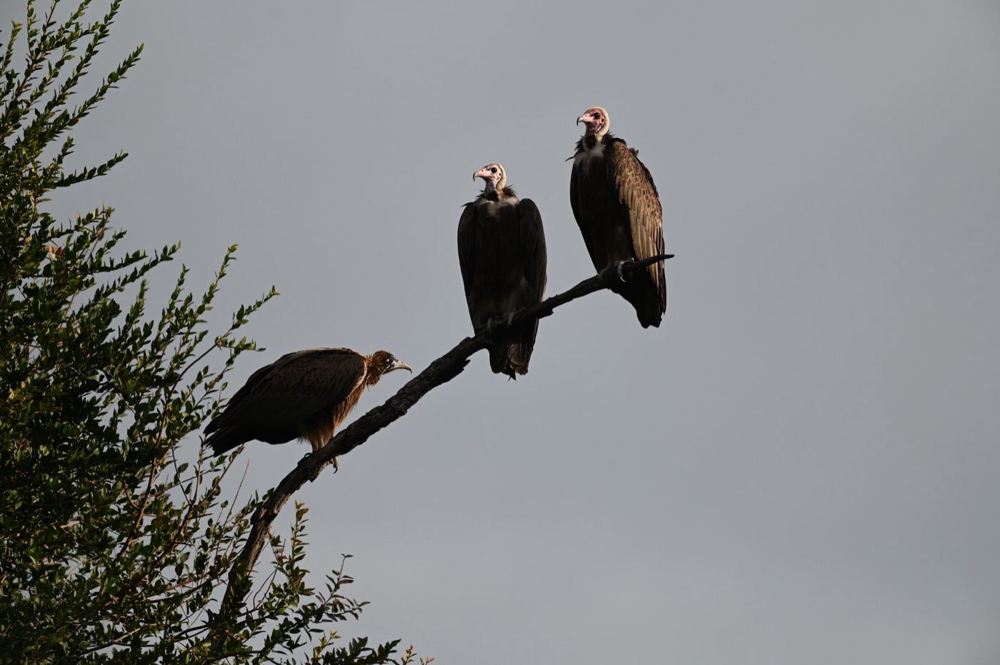
Hooded Vulture
Best shot ★★★★Africa's humble scavenger, quietly holding ecosystems together
With a wizened, pinkish face and a shuffling gait that belies its ecological importance, the Hooded Vulture is the unsung sanitarian of the African landscape. Often overlooked beside its larger, more imposing relatives, this small, dark-plumed raptor navigates bustling village markets and vast savannas alike — a feathered custodian threading between human civilization and the wild. Where death visits the bush, the Hooded Vulture is rarely far behind, arriving with quiet purpose to perform its ancient, indispensable work.
- Weighs 1.5–2.6 kg (3.3–5.7 lbs) with a wingspan of approximately 155–170 cm (5–5.6 ft)
- Can live up to 30 years in the wild, with some captive individuals exceeding 35 years
- Its bare facial skin flushes from pink to bright red when the bird is excited or stressed — a visual signal unique among African vultures
- Diet includes carrion, insects, scraps from human settlements, palm-oil fruit, and occasionally faeces — making it one of Africa's most versatile scavengers
- One of the most human-habituated raptors on the continent, often roosting on buildings and walking calmly among people in West African towns
Habitat & Range
The Hooded Vulture ranges across sub-Saharan Africa, from the sun-scorched Sahel to the humid forests of West Africa and the sweeping savannas of East and Southern Africa. Unlike many vulture species that favour remote wilderness, Necrosyrtes monachus has developed a remarkable tolerance — even preference — for human proximity, commonly roosting on rooftops, foraging near abattoirs, and soaring above fishing villages and urban dumps. It inhabits open woodland, grassland, and coastal areas, and is particularly abundant in West African towns where it has become a familiar, if underappreciated, presence. Its range has contracted significantly in recent decades, with populations becoming increasingly fragmented across what was once a near-continuous distribution.
Behaviour
The Hooded Vulture is often the first scavenger to arrive at a carcass, yet its small size and relatively weak bill place it at the bottom of the vulture hierarchy — it feeds on scraps, picking delicately at soft tissues, tendons, and fragments that larger species discard. This apparent disadvantage has forged a resourceful opportunist: Hooded Vultures supplement their diet with insects, grubs, and even human refuse, patrolling roadsides and rubbish heaps with a calculated, almost domestic familiarity. They are typically seen alone or in loose pairs, though they may gather in impressive congregations of dozens at reliable food sources. Monogamous and loyal, breeding pairs construct stick nests high in the forks of large trees, often returning to the same site year after year. Their soaring flight appears languid, but it masks a keen intelligence — they watch other birds, mammals, and even human activity for cues that lead them to their next meal.
Conservation
Classified as Critically Endangered by the IUCN, the Hooded Vulture faces catastrophic population declines driven by poisoning — both deliberate and incidental — habitat loss, disturbance at nesting sites, and harvesting for traditional medicine and belief-based trade across West and Central Africa.
Field Encounter
Gallery
Warthog
Best shot ★★★Tusked, fearless, and built for Africa's unforgiving plains
With a face only evolution could sculpt — adorned with curving tusks and fleshy warts that serve as armored shields — the warthog charges through the African savanna with its tail held high like a ragged battle flag. Often dismissed as the comic relief of the bush, this tenacious suid is a master survivor, outwitting predators and enduring punishing droughts with a resourcefulness that rivals any of the continent's more celebrated icons. Beneath the ungainly exterior lives one of Africa's most adaptable and fiercely determined creatures.
- Adults weigh 50–150 kg (110–330 lbs), with males significantly larger than females, and stand up to 85 cm at the shoulder
- Capable of running at speeds up to 48 km/h (30 mph), fast enough to outpace most predators over short distances
- Their prominent facial warts are thickened skin pads made of bone and cartilage that protect the face during fights between rival males
- Primarily grazers, they feed on short grasses, sedges, roots, bulbs, tubers, and occasionally fallen fruit, supplemented by rare opportunistic feeding on carrion or small invertebrates
- Females give birth to litters of 2–4 piglets inside burrows, nursing them underground for several weeks before the young emerge to join the sounder
Habitat & Range
The warthog ranges across sub-Saharan Africa, from the sun-scorched Sahel grasslands to the lush mosaics of East African woodland and the open savannas of southern Africa. It thrives in grasslands, light bush, and floodplain margins, favoring areas where short grasses provide forage and abandoned aardvark burrows offer ready-made underground refuges. Remarkably tolerant of habitat disturbance, warthogs can be found on the fringes of agricultural land and even in peri-urban landscapes, though they avoid dense forest and true desert. Their dependence on water sources and underground dens for thermoregulation and predator evasion defines their home range, which typically spans one to four square kilometers.
Behaviour
Warthogs are diurnal foragers that drop to calloused, padded knees to graze on short grasses and dig for roots, bulbs, and rhizomes — a feeding posture so distinctive it has left evolutionary marks on their skeletal structure. They live in loose matriarchal groups called sounders, typically a mother and her offspring, while adult males are largely solitary, joining females only during breeding. When threatened by lions, leopards, or African wild dogs, a warthog's first instinct is a flat-out sprint — reaching speeds that would challenge many predators — before reversing into a burrow so its formidable upper and lower tusks face outward in a last-stand defense. Males engage in ritualized sparring matches during the mating season, pushing head-to-head with their skull warts absorbing the blows like built-in boxing gloves. Despite their rough appearance, warthogs maintain symbiotic relationships with oxpeckers and banded mongooses, visiting grooming stations where these allies meticulously remove ticks and parasites.
Conservation
Listed as Least Concern by the IUCN, the warthog remains widespread and relatively abundant, though localized declines are driven by habitat loss, drought, and hunting for bushmeat across parts of West and Central Africa.
Field Encounter
Gallery
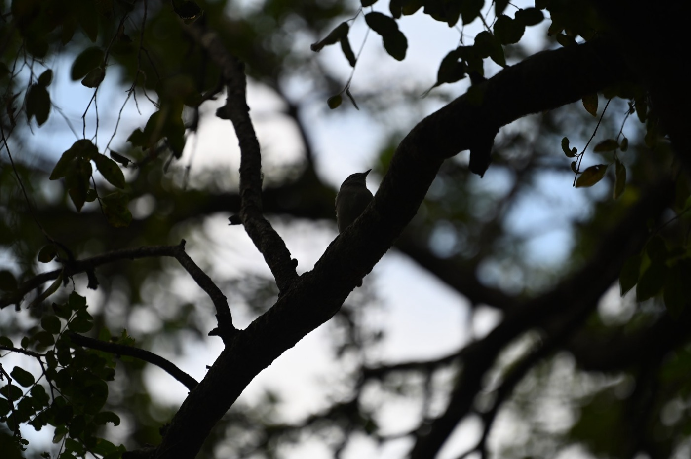
Woodpecker
Best shot ★★Nature's relentless drummer, carving life from ancient bark
A staccato burst of percussion shatters the woodland silence — somewhere high in the canopy, a woodpecker is hammering into heartwood with the force of a tiny jackhammer. Its skull absorbs impacts that would shatter bone in any other creature, each strike a masterclass in evolutionary engineering. With chisel-tipped bills and tongues that wrap around their own skulls, these avian carpenters reshape forests one cavity at a time.
- Size ranges from the 13 cm cardinal woodpecker to Africa's largest, the 35 cm Bearded Woodpecker, weighing up to 110 g
- A woodpecker can drum up to 20–25 strikes per second, enduring deceleration forces exceeding 1,200 g with each impact
- Their tongue is supported by the hyoid bone, which wraps around the skull and acts as a shock-absorbing sling
- Diet includes wood-boring beetle larvae, ants, termites, tree sap, wild fruits, and occasionally bird eggs
- Breeding pairs excavate a new nest cavity each season, leaving behind homes that benefit over 30 secondary-nesting species
Habitat & Range
Africa is home to a remarkable diversity of woodpeckers, from the golden-tailed woodpecker drumming across the miombo woodlands of East and Southern Africa to the cardinal woodpecker — the continent's smallest — tapping through acacia scrub and savanna parklands. Species such as the Knysna woodpecker cling to narrow forest belts along South Africa's southern coast, while the grey woodpecker thrives in the broad-leafed woodlands and riverine corridors of sub-Saharan Africa. They occupy virtually every wooded habitat the continent offers: montane forests, dry thornveld, coastal bush, and even suburban gardens with mature trees. The critical requirement across all ranges is standing deadwood or aging trees with softened heartwood suitable for excavation — making old-growth habitat irreplaceable for their survival.
Behaviour
Woodpeckers are solitary architects whose engineering feats ripple through entire ecosystems. Using a reinforced skull with spongy bone, a hyoid apparatus that wraps from the base of the bill around the back of the cranium, and a stiffened tail that acts as a tripod brace, they strike wood at speeds up to 25 times per second without suffering concussion. Their extraordinarily long, barbed tongues — sometimes extending four inches beyond the bill tip — probe deep into galleries to extract beetle larvae, ants, and termites with sticky precision. Many African species supplement this diet with fruit, sap, and even nectar. Pairs communicate territory through rhythmic drumming rather than elaborate song, each species producing a signature tempo. Critically, the cavities they excavate become nesting sites for hornbills, barbets, starlings, owls, bats, and tree snakes — earning woodpeckers the ecological title of 'keystone excavators' whose work sustains dozens of other species long after they move on.
Conservation
Most African woodpecker species are currently listed as Least Concern by the IUCN, though habitat loss through deforestation, commercial logging of deadwood, and the clearing of mature savanna trees for agriculture pose accelerating threats to cavity-dependent populations.
Field Encounter
Gallery
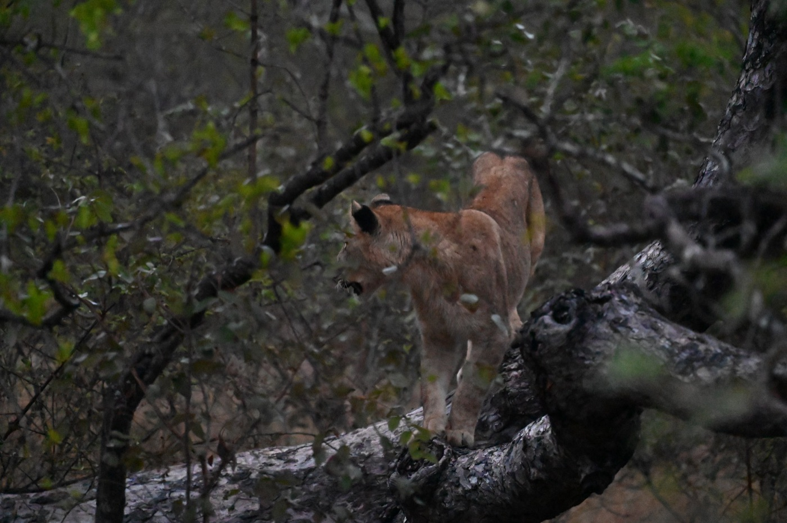
Caracal
Best shot ★★★★★The Leaping Shadow With Ears Tuned to Eternity
In the fading amber light of an African dusk, a silhouette explodes from the scrub — a caracal, launching nearly three metres skyward to snatch a startled dove from mid-flight with a single, devastating swipe of its paw. Few predators marry such lethal precision with such breathtaking grace. This is the cat that ancient Persians trained for sport, that Egyptian pharaohs immortalized in bronze, and that the African wilderness still harbours as one of its most elusive and electrifying hunters.
- Adults weigh 8–19 kg (18–42 lbs) and measure 60–92 cm in body length, with males significantly larger than females.
- Capable of reaching speeds up to 80 km/h (50 mph) in short bursts and leaping vertically up to 3 metres (10 feet) from a standstill.
- The distinctive black ear tufts, up to 5 cm long, are thought to aid in communication and may enhance sound localization — their name derives from the Turkish 'karakulak,' meaning 'black ear.'
- An opportunistic carnivore, the caracal's diet spans over 30 prey species including hyraxes, hares, rodents, francolins, small antelope, and occasionally reptiles and invertebrates.
- Highly territorial and solitary, males may patrol home ranges of up to 300 km² in arid regions, marking boundaries with urine spray and claw rakes on prominent trees.
Habitat & Range
The caracal commands one of the broadest ranges of any African wild cat, prowling habitats from the sun-scorched Saharan fringes and the arid Karoo of South Africa to the misty montane forests of Ethiopia and the dense coastal fynbos of the Western Cape. It thrives across sub-Saharan Africa's savannas, semi-deserts, dry woodlands, and rocky hillsides, showing a remarkable tolerance for aridity that few felids can match. Beyond Africa, its range extends through the Middle East, Central Asia, and into the scrublands of the Indian subcontinent — but it is on the African continent, amid thorny acacia thickets and vast open plains, that the caracal reaches its greatest densities and perhaps its most iconic expression.
Behaviour
Solitary, nocturnal, and fiercely territorial, the caracal is a ghost of the grasslands — seldom seen, always present. Its legendary vertical leap, powered by explosive hindquarters packed with fast-twitch muscle, allows it to swat multiple birds from a flushing flock before a single feather touches the ground, a spectacle that gave rise to the old expression 'to put the cat among the pigeons.' Beyond its aerial acrobatics, the caracal is a versatile ambush predator capable of taking prey up to three times its own body weight, including springbok, young kudu, and large guineafowl, dispatching them with a suffocating throat bite honed by millennia of evolution. Its iconic black-tufted ears — the longest of any wild cat — are not mere ornamentation; over twenty muscles independently rotate each ear like a radar dish, pinpointing the faintest rustle of a rodent beneath dry grass. Males and females converge only briefly for mating, after which the female alone raises a litter of one to six kittens in a concealed den among rocks or abandoned burrows, teaching them to hunt over a painstaking year before they disperse into solitary lives of their own.
Conservation
Listed as Least Concern by the IUCN, the caracal nonetheless faces mounting pressure from habitat fragmentation, retaliatory killings by livestock farmers — particularly in southern Africa — roadkill on expanding highway networks, and illegal capture for the exotic pet trade.
Field Encounter
Gallery
Marabou Stork
Best shot ★★Africa's undertaker stalks the plains on silent wings
Standing nearly five feet tall with a wingspan that rivals the Andean condor, the Marabou Stork cuts a ghoulish silhouette against the African sky — part vulture, part prehistoric phantom. Its bald, scab-pink head, dangling throat sac, and hunched posture have earned it the grim title of 'the undertaker bird.' Yet beneath its grotesque exterior lies one of Africa's most ecologically vital scavengers, a relentless recycler of death that keeps the savanna clean.
- Standing up to 152 cm (5 ft) tall and weighing up to 9 kg (20 lbs), it is one of the largest flying birds in the world.
- Its wingspan can reach 3.7 meters (over 12 feet) — among the greatest of any living land bird.
- The bare head and neck are an adaptation for hygiene, preventing feathers from matting with blood and gore during scavenging.
- Diet is staggeringly varied: carrion, fish, frogs, insects, flamingo chicks, scraps from human refuse, and even small mammals and birds.
- Marabous are highly social, roosting and breeding in colonies of up to several thousand individuals, often alongside other large waterbirds.
Habitat & Range
The Marabou Stork ranges across sub-Saharan Africa, from the arid Sahelian margins of Senegal and Ethiopia to the lush wetlands of Uganda, Kenya, and Tanzania. It thrives in an extraordinarily broad sweep of landscapes — lakeshores, riverbanks, open grasslands, and even the reeking margins of urban landfills and slaughterhouses, where it has become a brazen cohabitant of human settlements. Large breeding colonies cluster in the treetops of acacia woodlands and along the shores of Africa's great Rift Valley lakes, while non-breeding birds wander nomadically, following rains, fires, and the scent of carrion across vast distances.
Behaviour
Marabou Storks are opportunistic to the point of audacity. They wade into vulture feeding frenzies, shouldering aside competitors with dagger-like bills capable of puncturing tough hide, and they patrol grass fires to snatch fleeing insects, rodents, and reptiles from the flames. Their inflatable gular sac — a pendulous, fleshy pouch hanging from the throat — serves not for food storage but for complex thermoregulation and courtship display, flushing red when a male seeks to impress. Colonies can number in the thousands, a raucous parliament of clattering bills and guttural croaks, yet the birds are largely silent in flight, soaring effortlessly on thermals for hours alongside vultures. They are also notorious kleptoparasites, stealing meals from pelicans, flamingos, and even other storks with brazen efficiency.
Conservation
The Marabou Stork is currently classified as Least Concern by the IUCN, though localized declines are driven by wetland degradation, poisoning events targeting vultures that inadvertently kill storks, and disturbance of breeding colonies by expanding human development.
Field Encounter
Gallery
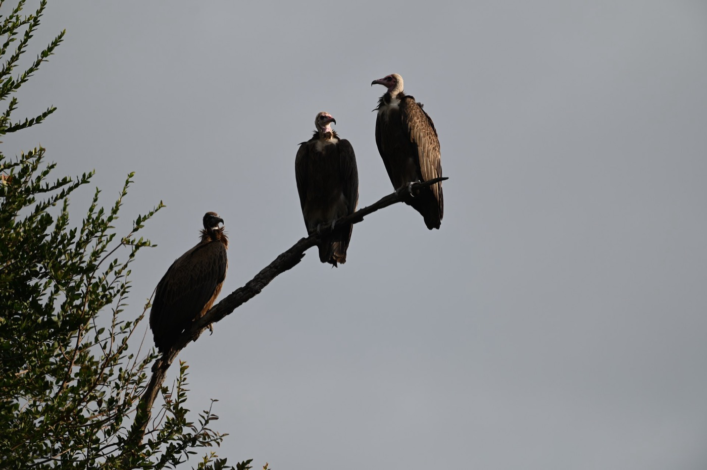
White-headed Vulture
Best shot ★★★★A pale sovereign circling Africa's vanishing wild frontiers
With a crown of snow-white down and a piercing, coral-pink bill, the White-headed Vulture commands the African sky like a solitary emperor surveying a crumbling kingdom. Often the first vulture to arrive at a carcass — and the first to be driven away by larger rivals — it is a bird defined by quiet defiance. Critically endangered and increasingly rare, each sighting from a safari vehicle feels like witnessing a ghost drifting between two worlds: the wild Africa that was, and the uncertain one yet to come.
- Adults weigh 3.3–5.3 kg (7.3–11.7 lbs) with a wingspan of up to 2.3 meters (7.5 feet)
- Estimated lifespan in the wild is around 30 years, though few individuals now survive to old age
- One of the only African vultures that actively hunts live prey, including flamingo chicks and monitor lizards
- Diet is broadly opportunistic — carrion forms the bulk, but it also takes insects, stranded fish, and the eggs of ground-nesting birds
- Strictly territorial and solitary nesters, pairs defend home ranges of up to 1,000 square kilometers and raise just one chick every one to two years
Habitat & Range
The White-headed Vulture inhabits a broad but fragmented belt of sub-Saharan Africa, from Senegal and The Gambia in the west through to Ethiopia, Kenya, Tanzania, and down into southern Mozambique and northeastern South Africa. It favors open woodland, mixed bushveld, and semi-arid savanna — landscapes where scattered trees offer nesting platforms and thermals rise reliably from sun-baked earth. Unlike the gregarious Gyps vultures that congregate around protected reserves, this species is thinly spread across its range, requiring vast territories of undisturbed wilderness. It is often associated with large, intact wildlife areas such as the Serengeti-Mara ecosystem, Kruger National Park, and the Selous Game Reserve, though even in these strongholds its numbers are in precipitous decline.
Behaviour
The White-headed Vulture is something of a loner among Africa's scavenging guild — typically seen singly or in pairs rather than in the raucous, jostling mobs that characterize other vulture species. Remarkably, it is partly predatory, a trait unusual among Old World vultures; it has been observed killing flamingo chicks, small mammals, and reptiles, supplementing its scavenging diet with active hunting. At a carcass, it often arrives early — sometimes before any other vulture — exploiting its keen eyesight to spot carrion from enormous heights, yet its relatively small size and subordinate status mean it is quickly displaced by White-backed and Lappet-faced Vultures once the crowd descends. Pairs are monogamous and fiercely territorial, building massive stick nests atop flat-crowned trees — often acacias or balanites — and typically raising just a single chick per breeding season, a painfully slow reproductive rate that leaves the species acutely vulnerable to population declines.
Conservation
Classified as Critically Endangered by the IUCN, the White-headed Vulture faces a devastating convergence of threats including poisoning from poached carcasses laced with agricultural pesticides and poisons, habitat loss driven by expanding agriculture, persecution for use in traditional belief-based medicine, and collisions with power lines — with populations estimated to have declined by more than 80% over three generations.